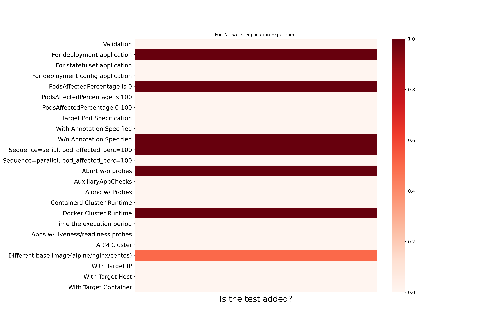
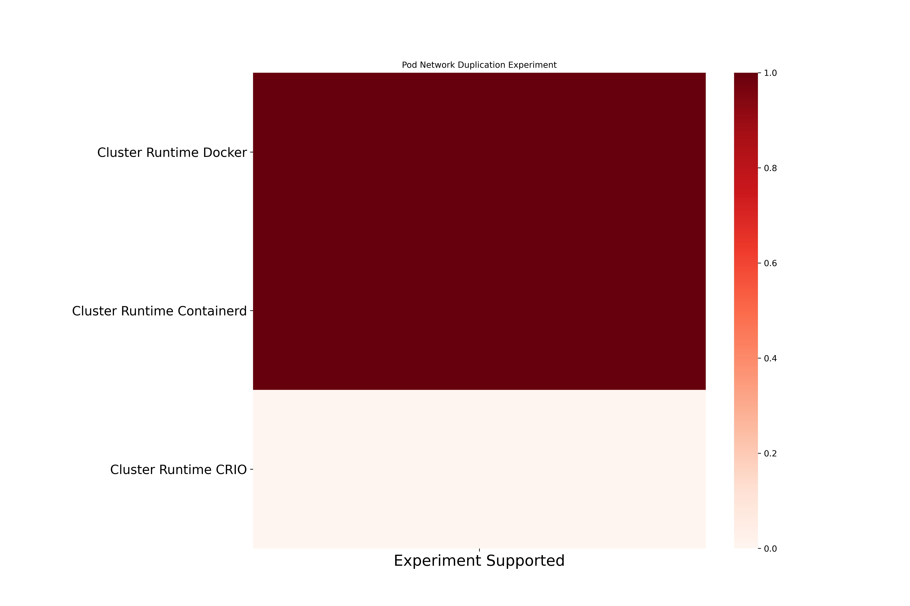
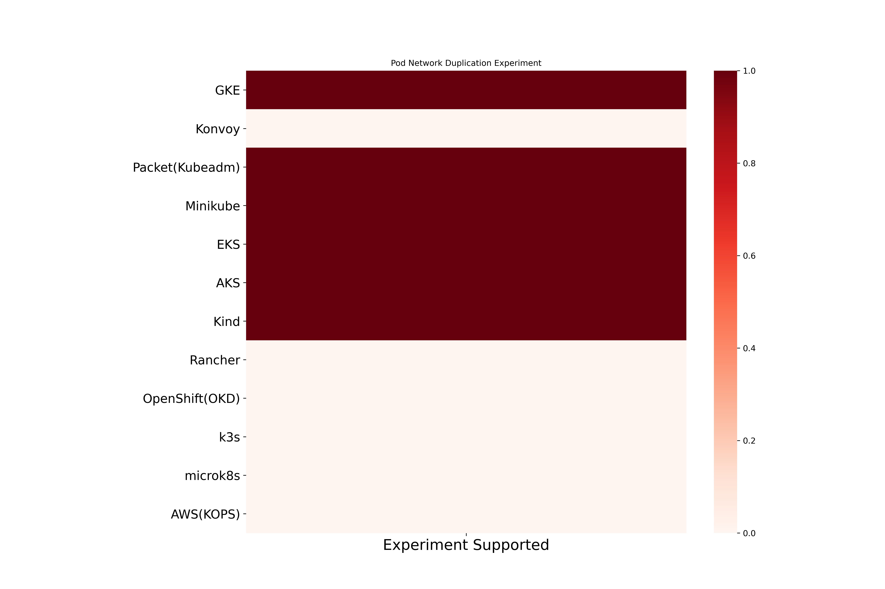

Pod Network Duplication Chaos
Pod Network Duplication inject packet duplication into application pod. Here are the different coverage metrics for the experiment.
Pod Network Duplication experiment based coverage

Pod Network Duplication cluster runtime based coverage

Pod Network Duplication platform based coverage
